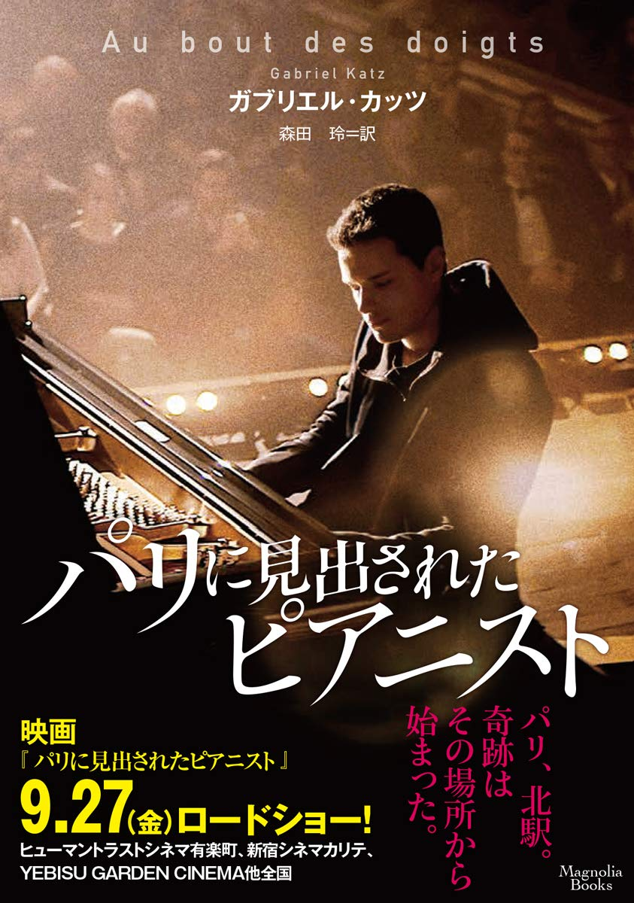
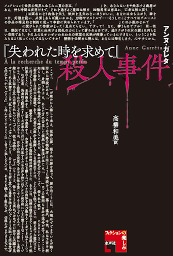

Works

シベリアの森のなかで（近刊）
原題:Dans les forêts de Sibérie
著者:シルヴァン・テッソン

パリに見出されたピアニスト
原題:Au bout des doigts
著者:ガブリエル・カッツ
オークラ出版(2019/9/20) | 376ページ
パリ、北駅。雑踏の中に置かれた一台のピアノから聞こえてきたバッハの調べに、音楽学校のディレクターであるピエールは足を止めずにはいられなかった。強く心を打つ演奏は、二十歳くらいの青年によるものだった。決して完璧に弾いているわけではないのに、ピエールには山の中の早瀬、雷雨の空を全速力で駆けていく雲が見え、喉を締めつけられるような感情にとらわれた。しかし、演奏は三人の警官によって静止され、青年は逃げるようにそこから立ち去ってしまった。並外れた感性を持つその青年を見つけ出したいとピエールは願い──。9月27日公開の映画『パリに見出されたピアニスト』の翻訳小説（ペンネームで翻訳）。

『失われた時を求めて』殺人事件
原題:La Décomposition
著者:アンヌ・ガレタ
水声社(2018年) | 215ページ
完全犯罪という大いなる使命を抱いた主人公によって『失われた時を求めて』の登場人物たちが、ある一定のルールに基づいて、1人、また1人と殺されていく、実験文学集団ウリポ(潜在文学工房)の数少ない女性会員による、奇想天外な犯罪小説。